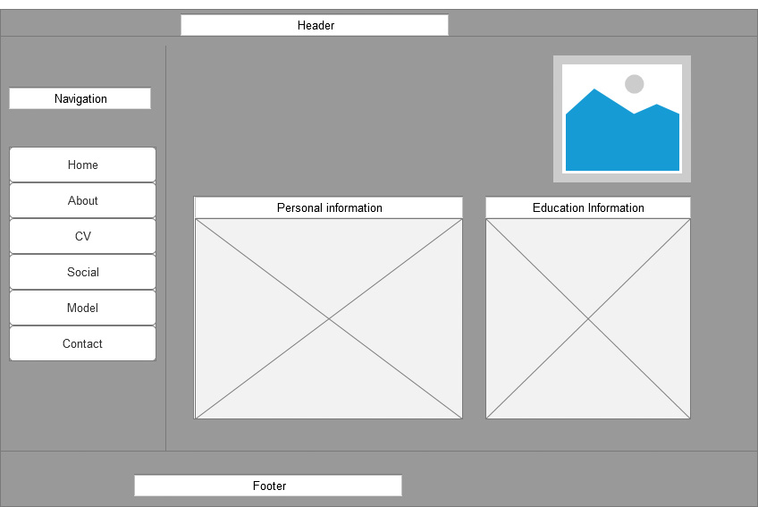

TABLE OF CONTENT
INTRODUCTION
Wireframe
Sketches
Screenshot
Validation of pages
Refrences
Conclusion
Introduction
As being handed the assignment by the University of Northampton I had instruction to create professional website .As Before getting started with creating mine webpage, I had been research on the different website as well as video tutorials on the Google and YouTube and I found some of the creative webpage to create from there I got some idea form there and after that I went through different people and learn some idea on how could I create a professional style website. Then I started creating mine website using W3 School .This made me easier for HTML code and css which gave me a kind of platform to be able to create with the beginning.
Wireframe
Wireframe is usually called screen blueprint .It is mainly the skeletal framework of the website. It is usually the depict page layout or arrangement of website content, which include interface element and navigational system. It is done by using pencil drawing or sketching on the whiteboard. Then it is created for the arranging the element and accomplishing the particular purpose. It helps to display the certain kind of information of the website. It is conceptual structure, information architecture or visual design of website.
Wireframe of About page
Wireframe of CV page

Wireframe of Social page
Wireframe of Contact page
Sketches
Sketches of Home pages
I want my homepage to be simple and easy to understand to the user .I will add a picture of myself on the right side of the page and the navigation bar at the left side which will hover and change the color while touching and footer at the bottom of the page .Sketches of About me
For the about page I have included the same navigation bar where I will including on each page at the left side . I have included the biography about myself .and the right side of the top I have kept photo.
Sketches
Sketches of CV pages
For the CV pages I have included the same navigation bar where I have 2 div on the section .I have given mine detail information about myself . I have footer at the bottom of the page .Sketches of Social pages
Sketches
Sketches of Contact pages
For this page I have same navigation bar where i have map and contact detail on the section side . Here i have kept the live map of my destination .i have kept the choosen option for the gender .
Screenshot
Screenshot of Home pages
Screenshot of About me pages
Screenshot of CV pages
Screenshot of Social pages
Screenshot of Contact pages
Validation
validation is the checker
Validation for about.html page
Validation for contact.html page
Validation for CV.html page
Validation for main.css page
Navigation
Navigation is graphical user interfaces.It is implemented in file browser,web browser as design element. It is the important model of good pratice which you add to the website .Finally we have to be sure also that user easily navigate the website. While the one webpage is open it make the user to easily return back to the webpage as not by clicking on the return page for opening the another wepage .Refrences
W3SchoolConclusion
As by the assigmnet that our module _tutuor had given to us .I had tried to make the possible webpage by making it creative.I had make the page responsive by using the html and css code taken from the w3 school . I had showned mine all the wireframe and sketches and validation error on the report. I have include all the criteria that we were instructed by our tutor. i have not created the animation on mine webpage . I have made simple and easy to understand by the user and i have given comment to the code .